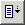

When digit buttons are pressed we need to update our calculator display. We need to know which numeral was pressed, but every button will behave in the same way. We will use a label module to centralize our display update logic.
Replace the ;@notify(...) statement in the generated skeleton code with the following line, using the correct digit value for the button that you are working with:
;@ let(Digit,9) goto(DigitPressed)
Repeat this step for all other digit buttons. Make sure that you use the correct numeral for the button that you are working with:
;@label(DigitPressed)
;@ mul(N,N,10) add(N,N,Digit) setText("textbox1.textbox",N)
Note: If you copy and paste these lines from the help documentation into the text editor you must ensure that the semicolon and at-sign combination appears at the beginning of every line. You can copy the help text by selecting the text and pressing Ctrl-C to copy the text to the clipboard. Use Ctrl-V to paste the text into the configuration file.
The variable N represents our calculator number and the textbox is our display window. Each time we press a digit button the digit is appended to our calculator button.
The setText(...) action command is a simple way to set the display field to the numeric value of the variable. Note that this is an UltraKiss specific command and the name "textbox1.textbox" must refer to the name of the textbox component added in the previous lesson. UltraKiss components simplifies the development of user interface code. With standard KiSS we would have to build many digit images to maintain a multi-digit display and this is far too complex for this tutorial.
Exit the text editor and apply the changes to create the DigitPressed label event.
The main UltraKiss window should now be visible. The FKiSS run indicator at the right end of the toolbar should now be yellow to show that a pause breakpoint is in effect. This indicator is green when FKiSS code is running normally, and red when stopped.
On your main UltraKiss screen, press one of the calculator buttons. Observe that the FKiSS Editor immediately opens to the button event with the first action statement highlighted. The FKiSS Editor window title should begin with the word 'Breakpoint'. This shows you that the editor is in breakpoint mode and is stepping through FKiSS code statements. The action statement ;@ let(Digit,...) should be highlighted.
Continue to step through the code one statement at a time. Use Run-Execute Statement or F3 or press the
When you reach the last statement of the label event which is the setText() action command, you should see a popup dialog indicating that the breakpoint event has ended. The FKiSS Editor preview image pane should also have been updated with the new digit showing in the calculator textbox.
With the main UltraKiss window visible the FKiSS run indicator at the right end of the toolbar should be green. Test all your buttons and verify that the calculator display textbox accurately maintains the number as you enter different digits.
You will eventually exceed the display limits as you keep appending digits to your number. You may also see incorrect values show up when the number is large. If this happens numeric overflow has occurred. To continue testing after overflow, use View-Restart to reset the calculator. In lesson 3 we will add buttons to reset the calculator properly.
If you do observe a fault, press the
You will most likely find that you have a typing error or incorrect digit value specified for the button that you are pressing. If this is the case you will have to correct your FKiSS code. The following steps explain how to do this and are instructive to follow even if no errors exits.
Ensure that you are in normal processing mode and not currently debugging code in the FKiSS Editor. If you are currently breakpointed, press the toolbar button in the FKISS Editor or use Run-Program Resume to return to normal processing. Then, within the main UltraKiss window, set a pause breakpoint on the next event by pressing the
Next, press one of your calculator buttons. This should automatically invoke the FKiSS Editor in breakpoint mode for a button press() event. The action statement ;@ let(Digit,...) should be highlighted.
We can change this variable value. Double-click the value field in the variable list table to select it. Then, type a new value for the variable, replacing its current value.
Continue stepping through the code or press the  toolbar button to execute all code to the end of the event. Observe how the new variable value is used in all subsequent action commands. You can temporarily change any variable value in this way as you test your code. This is sometimes useful to confirm subsequent code correctness once you have located a problem and know how to fix it.
If you want to create new events, use File-New Event as we did in Step 4. You can also create new events while editing any existing event, simply by writing new event declarations and code after the event being edited. When you exit the Text Editor the edited event code and all new events will be added to the KiSS set.
Edited event code is always checked for valid syntax. If you make a typing mistake or some other problem exists with your code the syntax errors will be displayed and you will have an opportunity to re-edit the adjusted event code to correct your mistakes.
If you choose to cancel the edit, no changes are made to the FKiSS code.